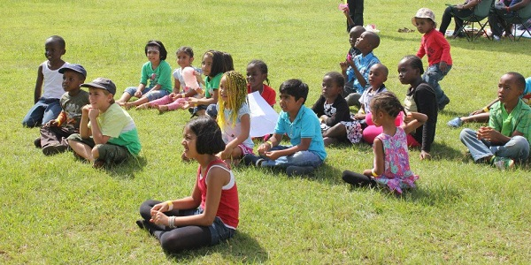

2nd April 2018, By Simon Kanya
An Ideal Kenyan Kids Festival (I)
 Whether you’re a parent who wants to take their kids to have fun in some kids’ festival event this April holidays, or whether you are a kids’ event organizer, the following are tips to utilize and get the best of moments for the kids, in your respective capacity where they may apply.
Whether you’re a parent who wants to take their kids to have fun in some kids’ festival event this April holidays, or whether you are a kids’ event organizer, the following are tips to utilize and get the best of moments for the kids, in your respective capacity where they may apply.
Kids want to be dressed in fancy clothes and an inviting environment. Their favorite superhero, Mickey Mouse, cloud guy, etc. Buy it or paint it.
- Security:
-
The area site should be secured. You are dealing with kids, & trained stewards would be of best help in handling them.
- Gone Missing Area:
-
Ensure the kids know what to do in case they go missing e.g where to converge, since almost always some will. ‘Glow in the dark’ wrist bands would help too, if the event extends into the night.
- Art & Attire:
-
Kids want to be dressed in fancy clothes and an inviting environment. Their favorite superhero, Mickey Mouse, cloud guy, etc; Buy it or paint it.
- First Aid:
-
A well-equipped first aid tent is essential. Common knowledge.
- Ear Defenders:
-
Children’s ears are delicate and very sensitive. If part of the experience is going to be loud music, get them ear defenders please.
- Toiletries:
-
These should be well labeled and easily accessible. Make sure you provide a decent hand washing facility.
There’s more that goes into creating the best lifelong memories for kids and using events to offer them insight on life and how to get the best out of it. An Ideal Kids Festival in Kenya (II), a continuation of this post, will be out this Thursday 5th April ’18. Stay hooked.
Share this Post on:
Kids Festival | Kenya | Festivals | Ideas | Events